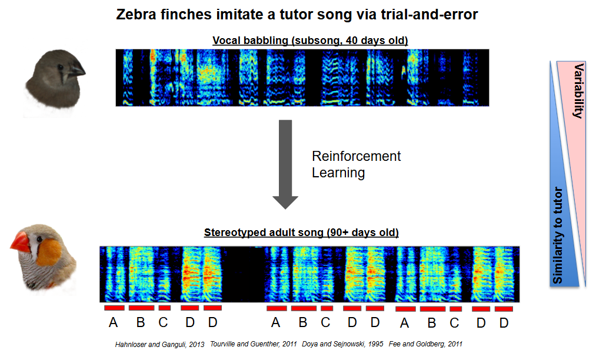

Zebra finches are a model organism for studying vocal learning and neurobiology. They learn to imitate a highly stereotyped song from a tutor during a critical period early in life, similar to how humans acquire language.
Another text block. Keep it simple, clean, and readable.